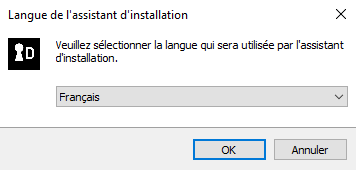
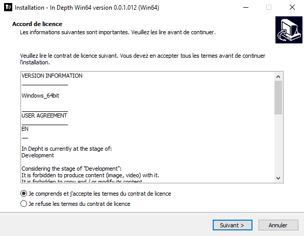
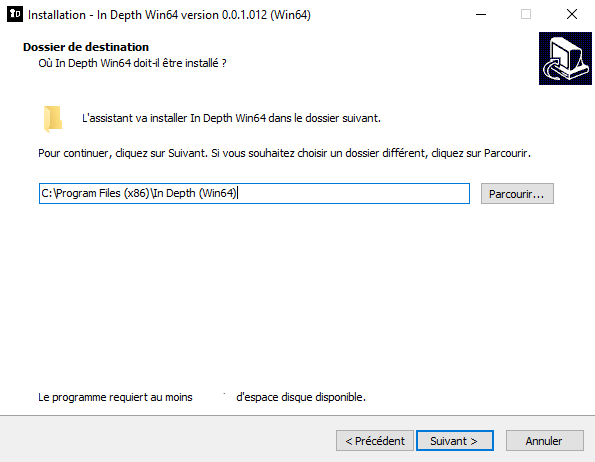
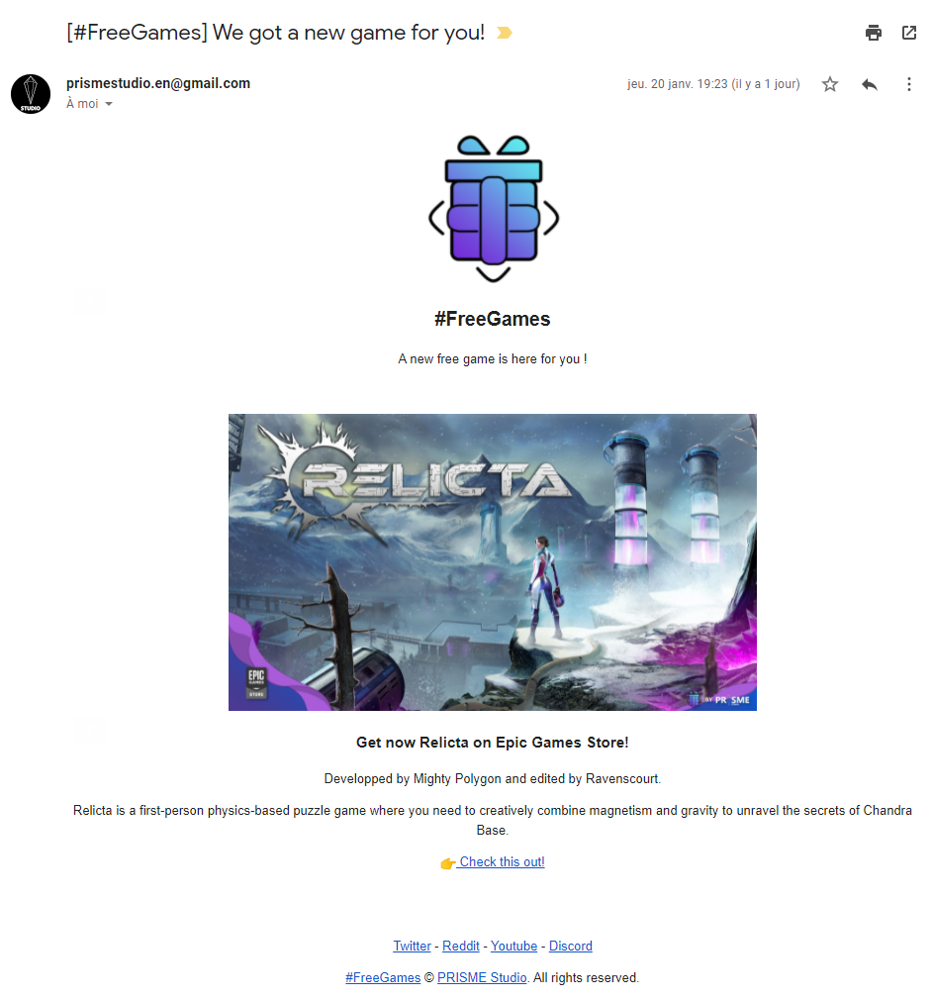
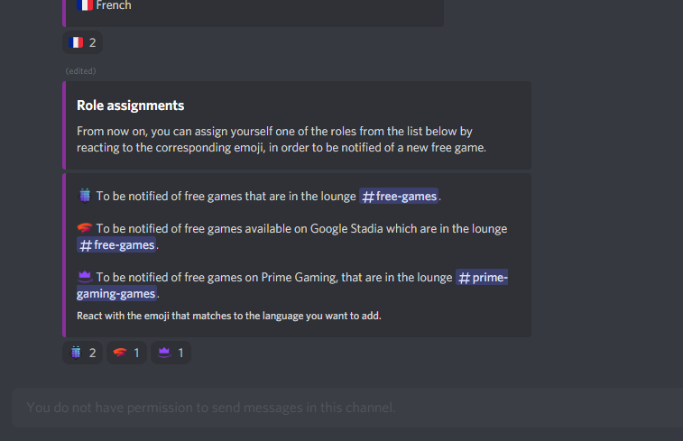
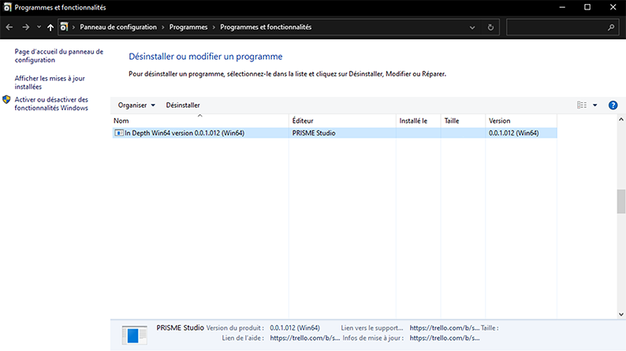

QUESTION FRÉQUEMMENT POSÉE
QUESTION FRÉQUEMMENT POSÉE
Conditions d'utilisations
In Depth est actuellement au stade de:
Développement
Compte tenu du stade de "Développement":
Il est interdit d'en produire du contenu (image, vidéo) avec celui-ci.
Il est interdit d'en copier et/ou d'en modifier son contenu.
Il est interdit de vendre le logiciel et ce de manière gratuite ou payante sans un accord de la part de PRISME Studio.
Tout contenu de "In Depth" est et restera propriété de PRISME Studio.
Trouvez tout les patchs notes ici:
https://prismestudio.github.io/fr/indepthpatchnotefr.html
PRISME Studio,
Tout droit réservé.
Avertissement d'utilisation
A la demande de l'arrêté du 2 novembre 1994 ordonnant l'apposition de mises en garde sur l'emballage et la notice d'emploi des jeux vidéo ainsi que dans les établissements mettant des jeux vidéo à la disposition du public par la loi Française.
A lire avant toute utilisation d'un jeu vidéo par vous-même ou votre enfant.
Certaines personnes sont susceptibles de faire des crises d'épilepsie ou d'avoir des pertes de conscience à la vue de certains types de lumières clignotantes ou d'éléments fréquents dans notre environnement quotidien. Ces personnes s'exposent à des crises lorsqu'elles regardent certaines images télévisées ou lorsqu'elles jouent à certains jeux vidéo. Ces phénomènes peuvent apparaître alors même que le sujet n'a pas d'antécédent médical ou n'a jamais été confronté à une crise d'épilepsie.
Si vous-même ou un membre de votre famille avez déjà présenté des symptômes liés à l'épilepsie (crise ou perte de conscience) en présence de stimulations lumineuses, veuillez consulter votre médecin avant toute utilisation.
Nous conseillons aux parents d'être attentifs à leurs enfants lorsqu'ils jouent avec des jeux vidéo. Si vous-même ou votre enfant présentez un des symptômes suivants : vertige, trouble de la vision, contraction des yeux ou des muscles, perte de conscience, troubles de l'orientation, mouvement involontaire ou convulsion, veuillez immédiatement cesser de jouer et consulter un médecin.
Précautions à prendre dans tous les cas pour l'utilisation d'un jeu vidéo :
- Lorsque vous utilisez un jeu vidéo connectable à un écran, jouez à bonne distance de cet écran de télévision et aussi loin que le permet le cordon de raccordement.
- Utilisez de préférence les jeux vidéo sur un écran de petite taille.
- Evitez de jouer si vous êtes fatigué ou si vous manquez de sommeil.
- Assurez-vous que vous jouez dans une pièce bien éclairée.
En cours d'utilisation, faites des pauses de dix à quinze minutes toutes les heures.
Comment télécharger et installer "In Depth" ?
Pour télécharger et installer "In Depth", veuillez suivre les instruction ci-dessous.
1- Téléchargez la dernière version à l'aide du bouton télécharger de la page téléchargement de "In Depth" (ici)
2- Une fois téléchargé, ouvrez le fichier (nommé "In Depth - Setup (Win32 / Win64)" en fonction de la version).
3-Une fois ouvert, sélectionnez la langue de l'installateur. Puis cliquez sur "Suivant".

4- Lire les informations de la version que vous installez, les avertissements d'utilisations (Vous pouvez les retrouver ici) et les conditions d'utilisations (ici) puis les accepter. Puis cliquez sur "Suivant".

5- Sélectionnez le fichier où "In Depth" doit être installé puis cliquez sur "Suivant".

6- Vous pouvez si vous le souhaitez ajouter un raccourcis sur le bureau. Puis cliquez sur "Suivant".
7- Vérifier le résumer de l'installation de "In Depth ", puis cliquez sur "Installer".
8- Patientez le temps de l'installation, puis un message de remerciement s'affiche, vous pouvez cliquer sur "Suivant" puis "Terminer" pour quitter l'installateur.

Voilà votre jeu est installé et prêt à jouer.
Si vous avez un problème n'hésitez pas à nous contacter via la rubrique "Nous contacter" en mettant dans l'objet du message votre adresse email ou votre compte discord (pseudo#000), toutes ces infos seront bien sûr gardé confidentiel.
Comment désinstaller "In Depth" ?
Pour désinstaller "In Depth", veuillez suivre les instruction ci-dessous.
1- Ouvrez le menu Windows, faite un clique droit sur l'application "In Depth" puis sélectionnez "Désinstaller".

2- Une fenêtre "Programmes et fonctionnalités" s'ouvre, recherchez le programme "In Depth (Nom de la plateforme) version (numéro de la version)", puis cliquez sur "Désinstaller".

3- Suivez les instructions donné.
Si vous avez un problème n'hésitez pas à nous contacter via la rubrique "Nous contacter" en mettant dans l'objet du message votre adresse email ou votre compte discord (pseudo#000), toutes ces infos seront bien sûr gardé confidentiel.
Comment être au courant d'une nouvelle version ?
Pour le moment nous n'avons pas de launcher / service updater, le seul moyen pour l'instant est de venir plus ou moins régulièrement sur notre site internet afin de vérifier si une nouvelle version est sortie, puis de l'installer.
Comment reporter un bug ?
Il suffit de remplir le formulaire "Bug Report" a l'adresse suivante:
https://forms.gle/ejZaZPAAedMB21x36
(or here)
Ou le remplir depuis le jeu.
Cela nous aidera a corriger les bugs, merci ! :)